Otizm Farkındalık Ayı olan Nisan boyunca bize katılın, #OtizmİçinMavi giyin, sosyal medyada paylaşın, hem farkındalığı
artırın, hem de çekildiğiniz fotoğraf sitemizde yayınlansın.
"Destek olmak için tek yapmanız gereken mavi bir tişört giyerek resminizi aynı etiketlerle paylaşmak. Hadi
hep beraber fark yaratalım! Ne dersiniz?" -Aslı Bayram
"Farkındalığı olmayan ailelerde, erken tanı şansını yitiren çocuklar için hep birlikte #OtizmİçinMavi giyiyoruz.
" -Serap Torun
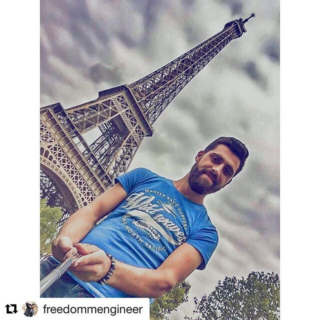
"Nisan ayı boyunca otizm farkındalığını arttırmak ve bu mesajı olabildiğince çok kişiye ulaştırmak için sende
mavi bir tişört giyip fotoğraf çektir." -Yılmaz Odacı
"Türkiye’deki 352 bin otizmli çocuğun sadece %5’inin eğitim alabildiğini biliyor muydunuz? Ülkemizde her 10
kişiden 7’si otizmi hiç duymamış bile." -Türkü Zencir
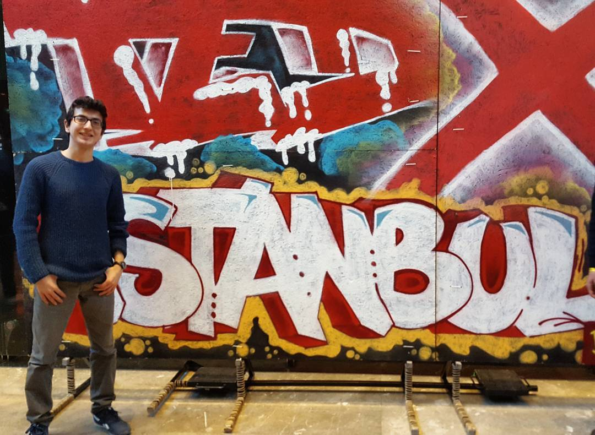
"Nisan ayı tüm dünyada otizm farkındalık ayı olarak biliniyor. Türkiyede her 10 insanın sadece biri otizmi
gerçek anlamıyla biliyor." -Dinçer Can
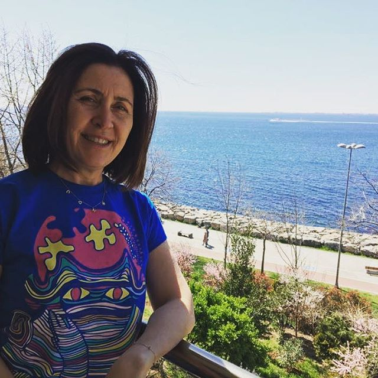
"2.Nisan Otizm Farkındalık Günü💙. Otizmi anlatan bu şahane tasarımlı tişört için ellerinize sağlık." -Canan
İlter
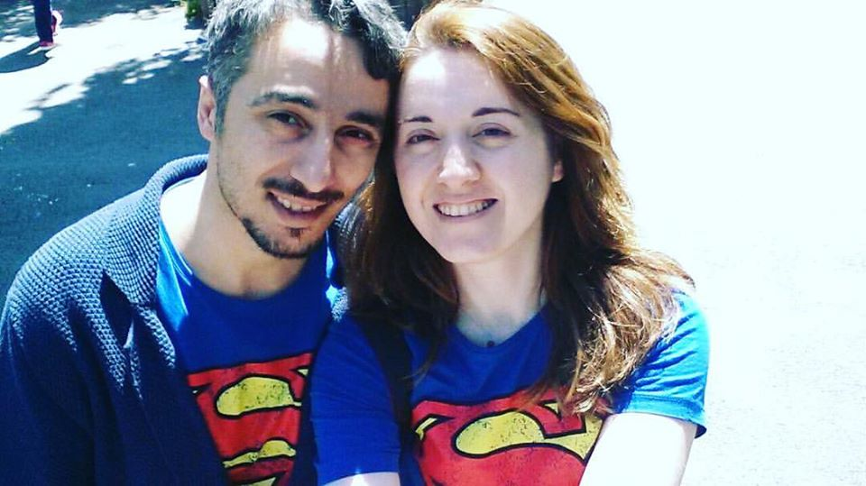
"Süper Güçlerimizle , #OtizmİçinMavi Giyiyoruz." -Aile Merkezi
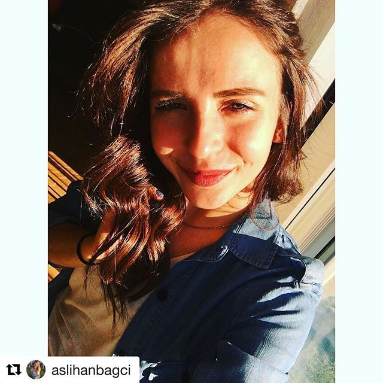
"Erken tanı ve yoğun sürekli özel eğitim tek tedavisi fakat Türkiye'de her 10 insandan biri otizmi biliyor
ve bu sebeple geç tanı konuluyor." -Aslıhan Bağcı
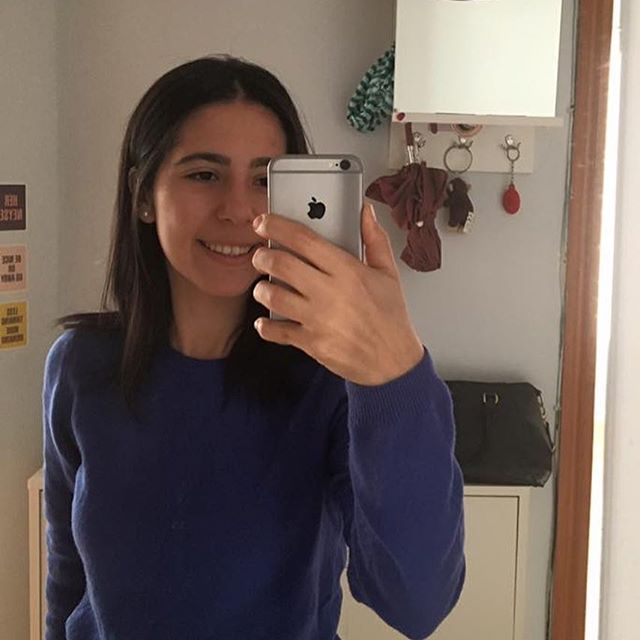
"Bugun günlerden 2 Nisan yani Otizm Farkındalık günü siz de mavi giyip sosyal medyada paylaşarak bu farkındalık
hareketine katılın!" -Öykü Kurtoğlu
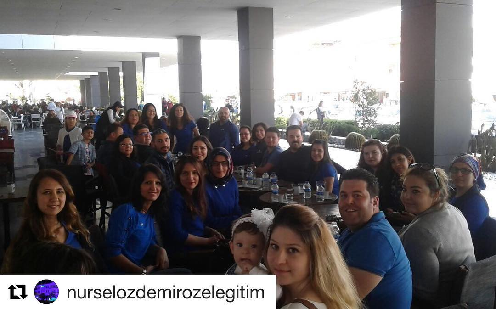
"#otizmicinmavi #2nisanotizmfarkındalıkgünü" -Nursel Özdemir Özel Eğitim
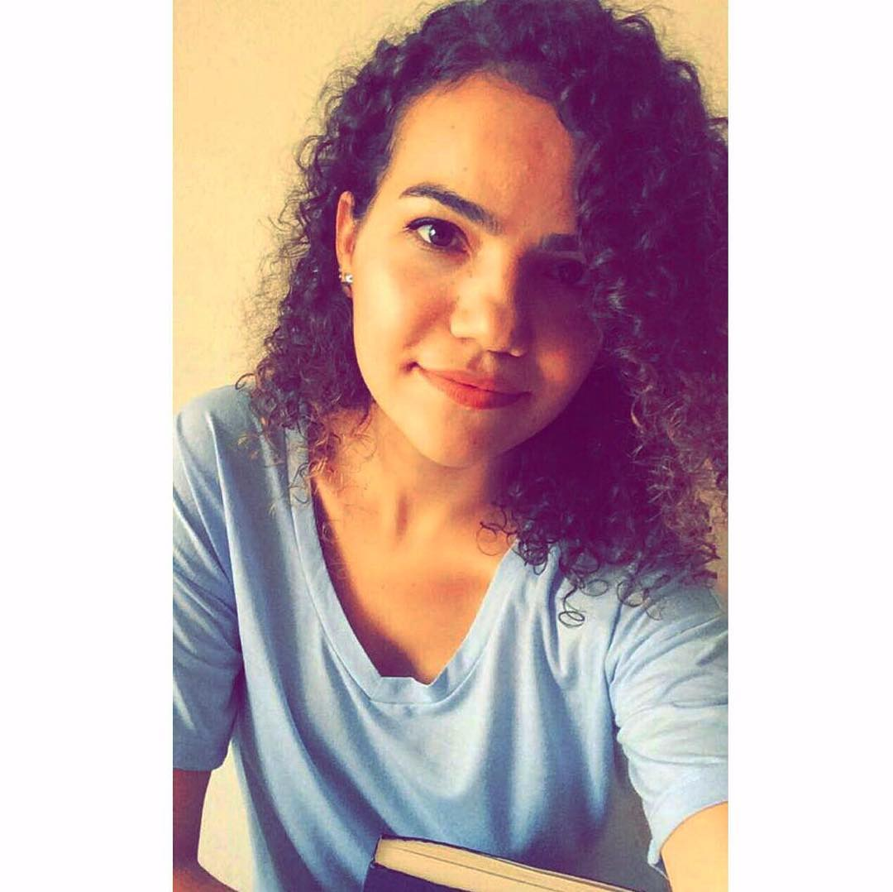
"Yapmanız gereken tek şey mavi bir tişört giyip fotoğraf çektirmek ve #otizmicinmavi hashtagiyle paylaşmak." -Melike
Kılıç
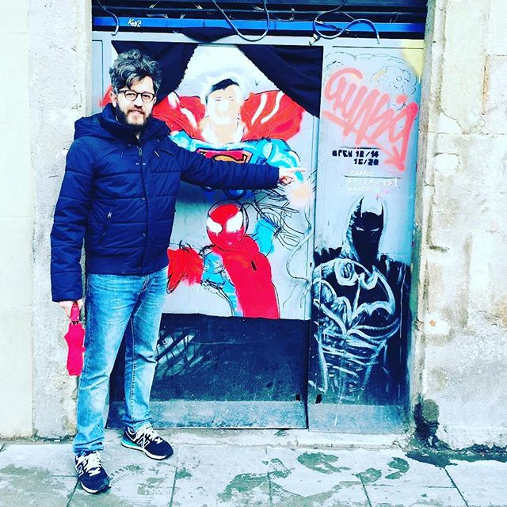
"#OtizmİçinMavi Giyiyoruz, Farkındalığımızı Yayıyoruz!" -Soner Altın
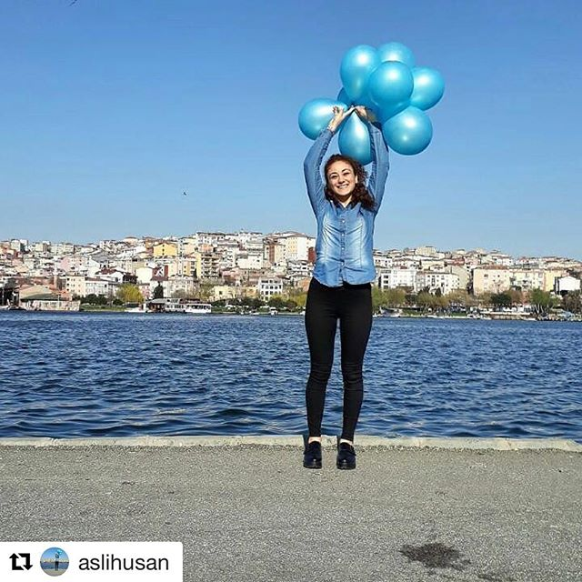
"2 Nisan Otizm Farkındalık Günü 💙 #otizmiçinmavi" -Aslı Husan
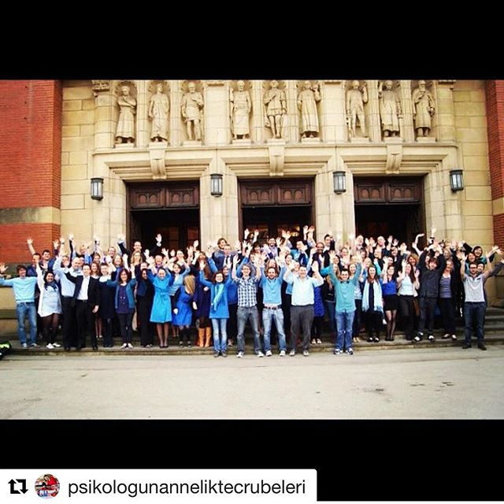
"Fakat çok da umutsuz olmanızı istemiyorum çünkü erken teşhis ve erken yaşta eğitime başlanmasıyla değişen
çok çocuk gördüm." -psikologunanneliktecrubeleri
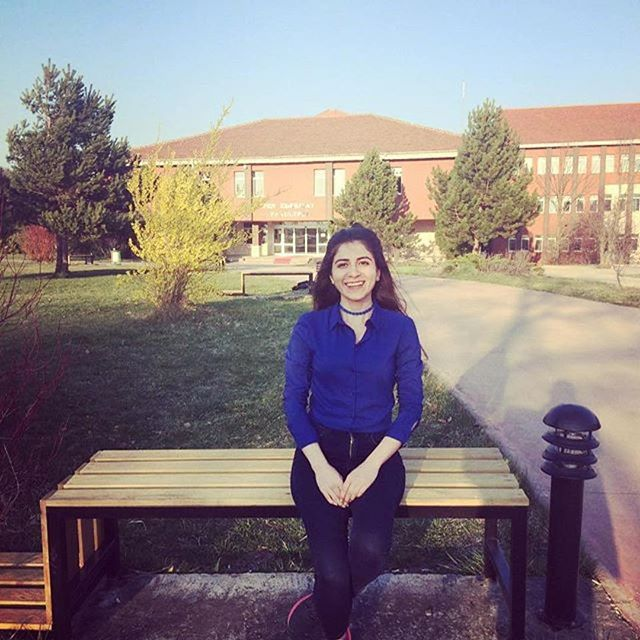
"Otizmin kesinleşmiş bir nedeni yoktur fakat erken tanı önemlidir. Bugün 2 Nisan Dünya Otizm Farkındalık Günü.
" -Şule Yıldırım